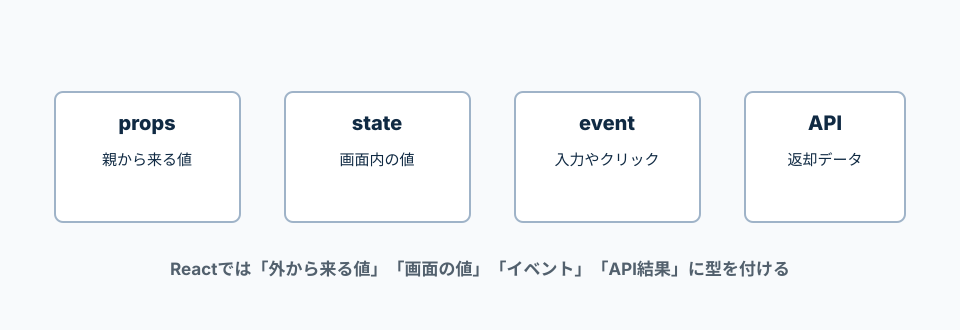

.tsx、props、useState、イベント、APIデータの型を整理する。
React公式では、JSXを含むTypeScriptファイルは.tsx拡張子を使うと説明されている。
Reactで最初に使う型は、props、Hooks、DOMイベント、childrenあたり。
Reactでは、props、state、event、APIレスポンスに型を付けると安心。
最初から全部に型を書こうとせず、外から来る値とAPIデータから始める。

JSXを書くTypeScriptファイルは.tsxにする。
例: Button.tsx、Index.tsx、AppRoutes.tsx。
resources/js/components/Button.tsx
resources/js/pages/Index.tsx
resources/js/routes/AppRoutes.tsx
.ts
普通のTypeScriptファイル。JSXを書かない時に使う。
.tsx
JSXを書くTypeScriptファイル。Reactコンポーネントで使う。
Buttonが受け取るpropsの形をtypeで作る。
titleは文字列、disabledは省略できるtrue/falseにする。
type ButtonProps = {
title: string;
disabled?: boolean;
onClick: () => void;
};
const Button = ({ title, disabled = false, onClick }: ButtonProps) => {
return (
<button type="button" disabled={disabled} onClick={onClick}>
{title}
</button>
);
};
export default Button;
disabled?: boolean
?が付いているので、disabledは渡しても渡さなくてもよい。
() => void
引数なしで実行し、戻り値を使わない関数という意味。
disabled = false
disabledが渡されなかった時の初期値。
初期値から型推論できる時は、型を書かなくてもよい。
空配列や複数候補の状態では、型を書くと安全。
import { useState } from 'react';
type Todo = {
id: number;
title: string;
is_done: boolean;
};
const Index = () => {
const [title, setTitle] = useState('');
const [todos, setTodos] = useState<Todo[]>([]);
return (
<main>
<input
value={title}
onChange={(e) => setTitle(e.currentTarget.value)}
/>
<ul>
{todos.map((todo) => (
<li key={todo.id}>{todo.title}</li>
))}
</ul>
</main>
);
};
export default Index;
useState('')
初期値が文字列なので、titleはstringだと推論される。
useState<Todo[]>([])
空配列だけでは中身が分かりにくいので、Todo配列だと明示している。
e.currentTarget.value
イベントが発生したinputの入力値を取る。
関数を外に出す時は、イベントの型を書くと分かりやすい。
inputの変更イベントならReact.ChangeEvent<HTMLInputElement>を使う。
import type { ChangeEvent, FormEvent } from 'react';
const handleChange = (e: ChangeEvent<HTMLInputElement>) => {
console.log(e.currentTarget.value);
};
const handleSubmit = (e: FormEvent<HTMLFormElement>) => {
e.preventDefault();
};
import type
型だけを読み込む時の書き方。
ChangeEvent<HTMLInputElement>
inputの値が変わった時のイベント型。
FormEvent<HTMLFormElement>
form送信時のイベント型。